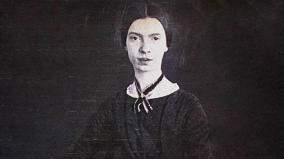

Emily Dickinson nació el 10 de diciembre de 1830 en Amherst, Massachusetts (Estados Unidos), en el seno de una familia acomodada y culta. Su padre, el abogado Edward Dickinson, fue miembro del Congreso y tesorero del Amherst College. Su madre, Emily Norcross, se dedicó al cuidado del hogar y a criar a Emily y sus dos hermanos (Austin, el mayor, y Lavinia, la pequeña). Ambos se encargaron de que sus tres hijos recibieran una buena educación, de ahí que, en 1840 –dos años después de que la Academia de Amherst aceptara mujeres— matricularon a Emily para que empezara el colegio.
Durante siete años, Emily estudió literatura, historia, religión, geografía, matemáticas, biología, griego y latín. Además, daba clases de piano con su tía, tenía canto los domingos y aprendió floricultura, horticultura y jardinería. Tras atender a una clase de botánica, Emily quedó tan fascinada que empezó a elaborar su propio herbario, en el que acumuló cientos de plantas y flores prensadas, con sus respectivos nombres en latín. Dada su inagotable sed de conocimiento, Emily profundizó por su cuenta en otros estudios. Pronto aprendió los nombres de todas las estrellas y constelaciones. También memorizó el nombre de las decenas de flores silvestres que crecían en la región y sabía perfectamente dónde encontrarlas. Todo este conocimiento lo plasmó en su producción poética.
Después de terminar el último curso en la Academia de Amherst, ingresó en el Seminario Femenino de Mount Holyoke, donde recibió una rígida educación calvinista. Dickinson en seguida advirtió que la vida religiosa no le interesaba y se negó a seguir ese camino, siendo clasificada como una de las pocas alumnas “no convertidas” del centro. En el seminario superó sin dificultades los exámenes de primero y le convalidaron la asignatura de botánica, dado su extraordinario conocimiento de la materia. A causa de un problema de salud, Emily regresó en verano a su casa familiar y no retomó los estudios. Aún así, la joven escritora llegó a tener una educación mucho más profunda que la de las mujeres de su época.